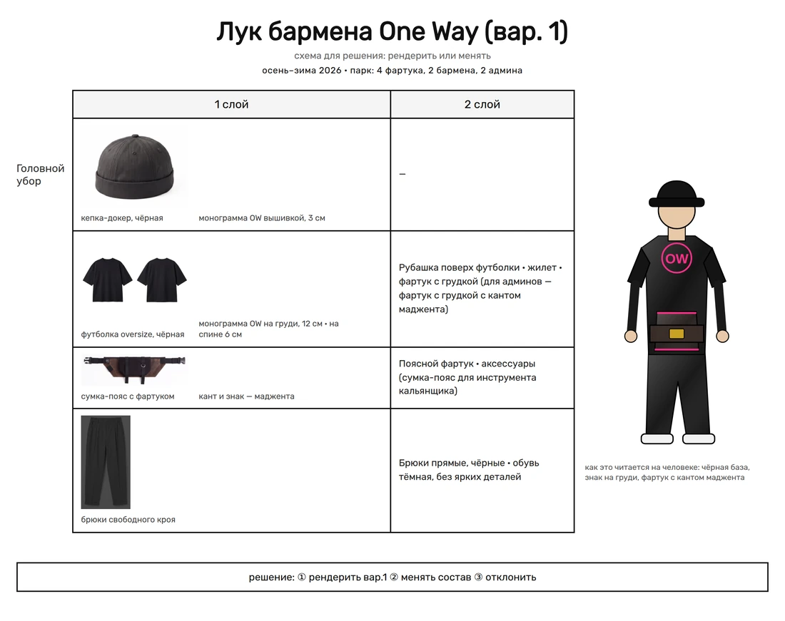
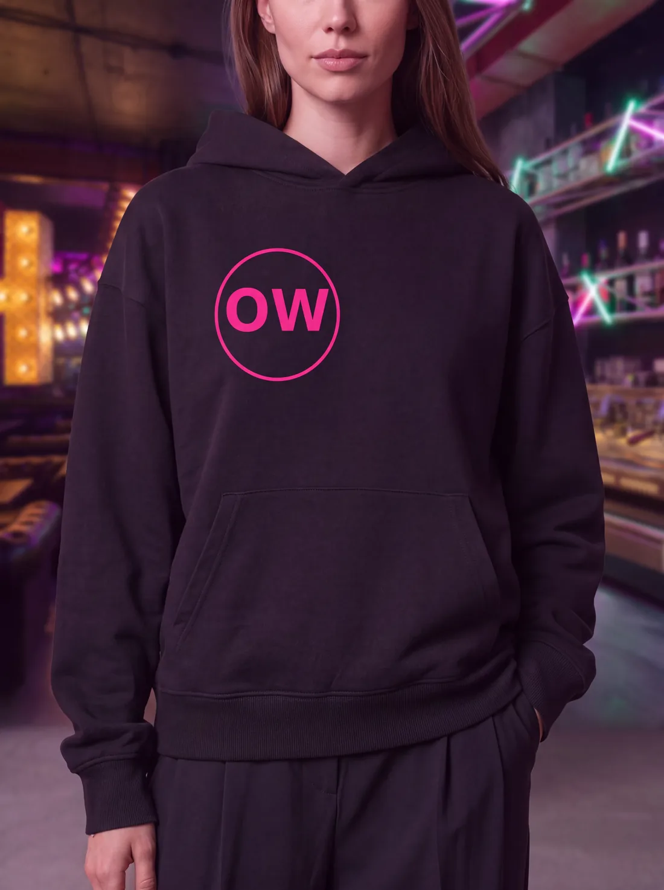
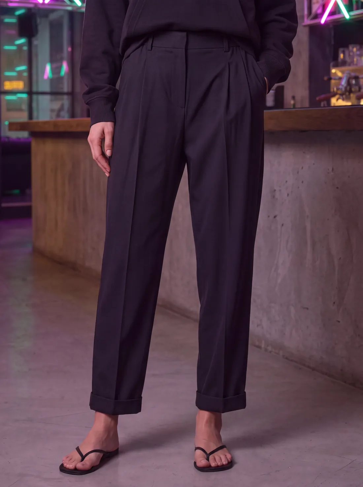
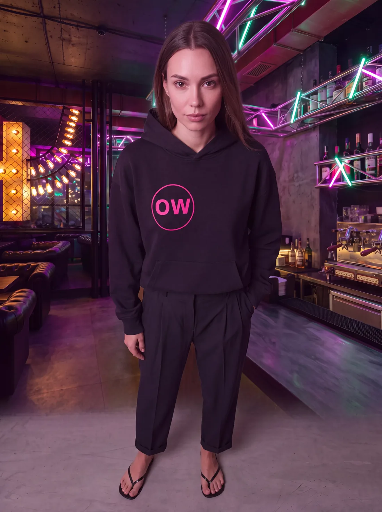

HARDY PENGUIN · персональное предложение
Форма для команды One Way
Собрали под ваш зал и вашу айдентику: чёрная база, неоновый акцент, знак на груди. Ниже — состав комплекта и как это читается на человеке и в интерьере.
черновик · не для распространения
Состав лука · схема для решения

Как это выглядит на человеке и в зале






Что решаем на этом шаге
Вариант лука
Оставляем базу или меняем состав: худи вместо футболки, жилет, фартук с грудкой.
Знак
Место и размер: грудь слева 8–10 см вышивкой, спина 20–25 см шелкографией, монограмма у ворота 4–5 см.
Парк
4 фартука, 2 бармена, 2 админа. После утверждения состава считаем точную смету на комплекты и обновление к следующему сезону.
Дальше
- Выбираете вариант и место знака — фиксируем спецификацию.
- Считаем смету на ваш парк и сроки.
- Перед производством показываем образец нанесения на ткани вашего цвета.